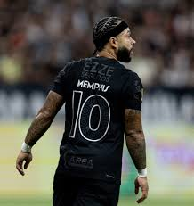

<!DOCTYPE html>
<html lang="en">

<head>
    <meta charset="UTF-8">
    <meta name="viewport" content="width=device-width, initial-scale=1.0">
    <link rel="stylesheet" href="style.css">
    <title>News.timao.com.br</title>

</head>

<body>

</body>

</html>

<h1>Troca de camisa 10?</h1>


<h3>Recemente, a camisa icônica do Corinthians foi passada de um jogador para outro. Rodrigo Garro teve de deixar a
    camisa 10 por conta do clube e adotando assim a nova camisa 8 que tambem é muito icônica na história do clube. </h3>


<h3>O novo portador da camisa 10 é Memphis Depay, que assinou contrato com o clube em 2024. Já tendo passado por muitos
    clubes europeus como Barcelona, Atletico de Madrid, Manchester United e sendo até Seleção Holandesa, veio em 2024
    fazer o reforço do Sport Club Corinthians Paulista em 2024 chegando ao clube com a camisa 94. </h3>

<h3>Memphis desde sua vinda ao clube foi atrás da camisa 10, onde após um tempo fez a diretoria passar a camisa 10 para
    ele, mas assim tirando a 10 de Rodrigo Garro.</h3>

<h3>Rodrigo Garro pegou a icônica camisa do time número (8), onde tem grande história no clube paulista passando por
    lendas como Socrates, Ezequiel, Freddy Rincón, Renato Augusto, entre outros.</h3>


<h3>Em sua entrevista, Garro deu o depoimento falando sobre a troca, "Não vou mentir, não me agradou" e "Pra mim é mais
    importante o clube" foram frases que disse o jogador na entrevista mostrando total respeito e responsabilidade a
    questão do clube.</h3>
    <h4>Feito por William Donato em News.timao.com.br</h4>